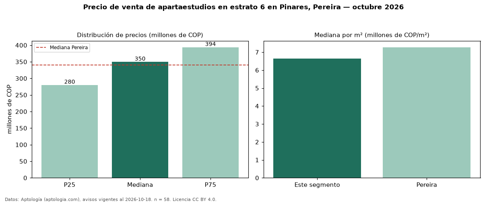

Precio de venta de apartaestudios en estrato 6 en Pinares, Pereira — octubre 2026
Con 58 avisos vigentes, el precio mediano de apartaestudios en estrato 6 en venta en Pinares, Pereira es COP 350 millones. Frente a la mediana de toda la vivienda de estrato 6 de Pinares (COP 695 millones, n = 792), queda 50 % por debajo; este segmento reúne el 7 % de esos avisos. Por metro cuadrado, la mediana es COP 6,63 millones/m² (n = 58), 21 % por encima del conjunto de referencia (COP 5,46 millones/m²). El área mediana anunciada es 52 m². La administración mediana declarada es COP 310.000 al mes (n = 37). La mediana de todos los apartaestudios en venta de Pereira es COP 340 millones (+3 % de diferencia). La mitad central de los avisos va de COP 280 millones a COP 394 millones (razón 1,4), una dispersión moderada. Datos: Aptología (aptologia.com), CC BY 4.0 — https://www.aptologia.com/apartaestudios-en-venta/pereira/pinares. Archivos: PDF, CSV con las cifras y gráfica PNG.

| Avisos únicos | 58 |
|---|---|
| Percentil 25 | COP 280.000.000 |
| Mediana | COP 349.550.000 |
| Percentil 75 | COP 393.750.000 |
| Mediana por m² | COP 6.634.508 |
Fuente: avisos vigentes de portales inmobiliarios recopilados por Aptología, deduplicados (mínimo 30 avisos únicos por celda). Precios pedidos, no cerrados. Fecha: 2026-10-18.